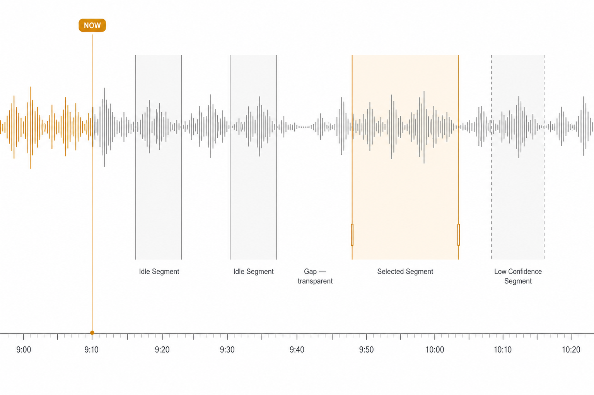
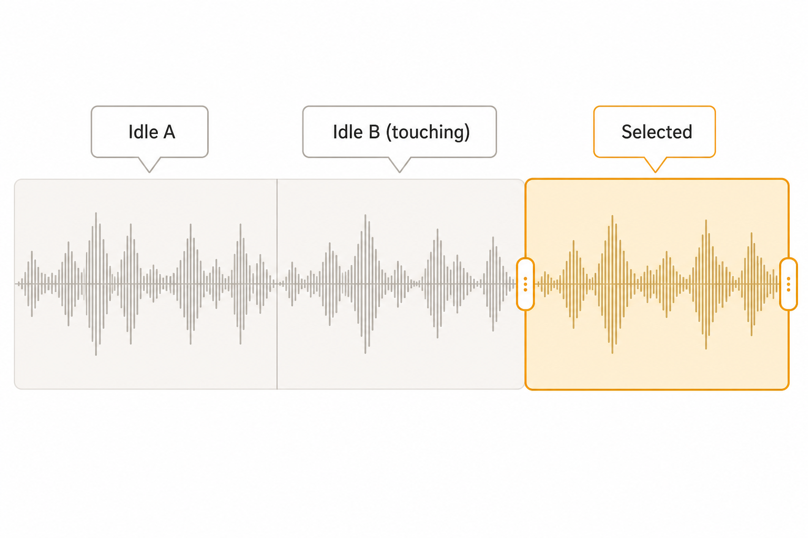
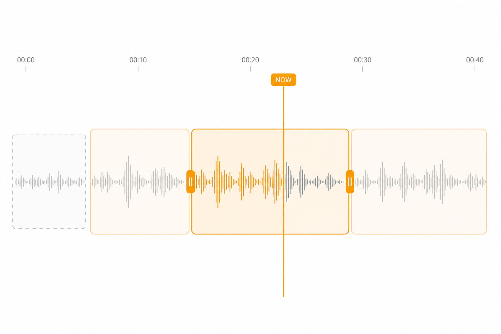
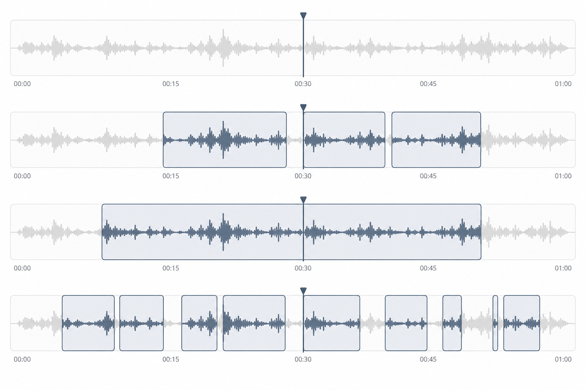

Rushi Waveform Segment Visual — Final
定稿视觉语言（非草稿需求）。Peaks 为主；band 极轻；边界与 handles 承担编辑语义； gap 全透明；已播放只靠 peaks tint，不做斜纹底。颜色全部来自现有 token。
Peaks firstIdle fill ≤ 5% text；selected ≤ 14% accent。波形节奏始终可读。
Boundary constant相邻无空隙时靠 hairline 分割；selected 用更强 border + handles。
Gap = nothing无语段时间窗零填充。点击 = seek，无 segment affordance。
idle
selected
in-selection
low-conf
selected border
playhead
F1 · Default + Gap
普通语段 + selected + 透明 gap + 低置信 dashed
idle
selected
gap 透明
低置信
played = peaks tint

定稿画面：gap 无灰块；played 仅 peaks 染色；selected 淡 saffron + handles。
F2 · Adjacent Boundaries
两段紧贴零空隙，hairline 必须一眼可辨

定稿画面：Idle A / Idle B 同色紧贴，共享竖线分割；右侧 selected 带 handles。
F3 · Multi-selection Hierarchy
primary selected（强 + handles）> secondary in-selection（弱、无 handle）

定稿画面：多选层级清晰；低置信 dashed 不抢 selected；无斜纹 played 底。
F4 · Accent Theme (Indigo)
同一结构换 --accent-action；禁止组件内写死 saffron hex

定稿画面：selected / in-selection / playhead 全部跟 indigo token 走。